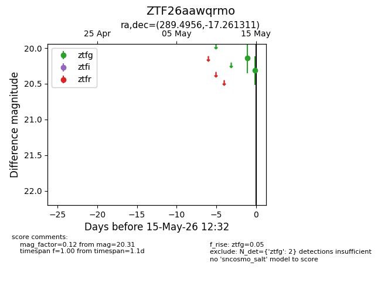
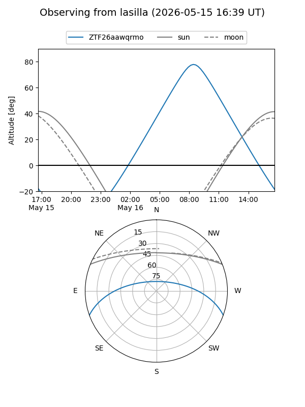
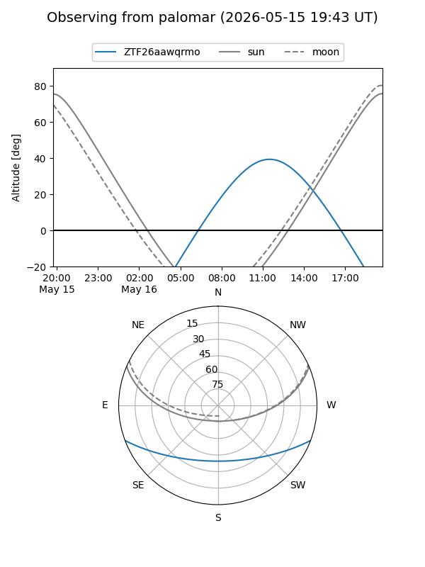

ZTF26aawqrmo
Target ZTF26aawqrmo at 2026-05-15 12:34
Aliases and brokers:
FINK: link
Lasair: link
ALeRCE: link
alt names
ZTF26aawqrmo (ztf,fink_ztf)
Coordinates:
equatorial (ra, dec) = 289.4956,-17.26131
equatorial (HMS+DMS) = 19:17:58.95,-17:15:40.72
galactic (l, b) = (20.2321,-13.50453)
Flags:
Photometry:
last ztfg=20.31
2 ztfg detections
Lightcurve

Visibility


Additional plots